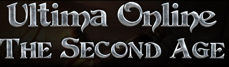

Games
-
Uthgard - Classic Dark Age of Camelot

Come relive old memories or make new ones at Uthgard! Will you choose to join the realm to the north in the ice lands of Midgard? Or perhaps settle into the Celtic forests of Hibernia? Then again perhaps knights of Camelot will draw you more towards the realm of Albion! Come choose a side! Fight with pride on this classic 1.65 patch Dark Age of Camelot server!
-
UO Second Age - A Classic Ultima Online Server
Can't stand the latest changes that EA has brought upon live servers? Come make a stand at the Britian graveyard against those nasty PKs or maybe make a peaceful shop setup in Trinsic as a tailor! The world is yours!
-
Project 1999

Everquest, what more is there to say? This game started it all! Come live out your days in this classic yet punishing MMO!